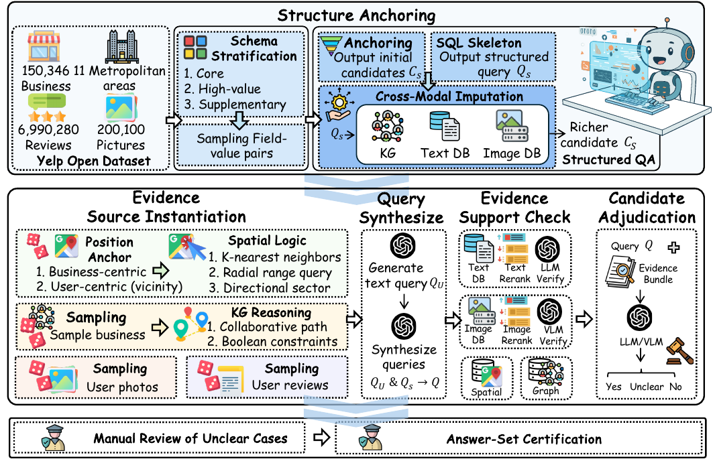
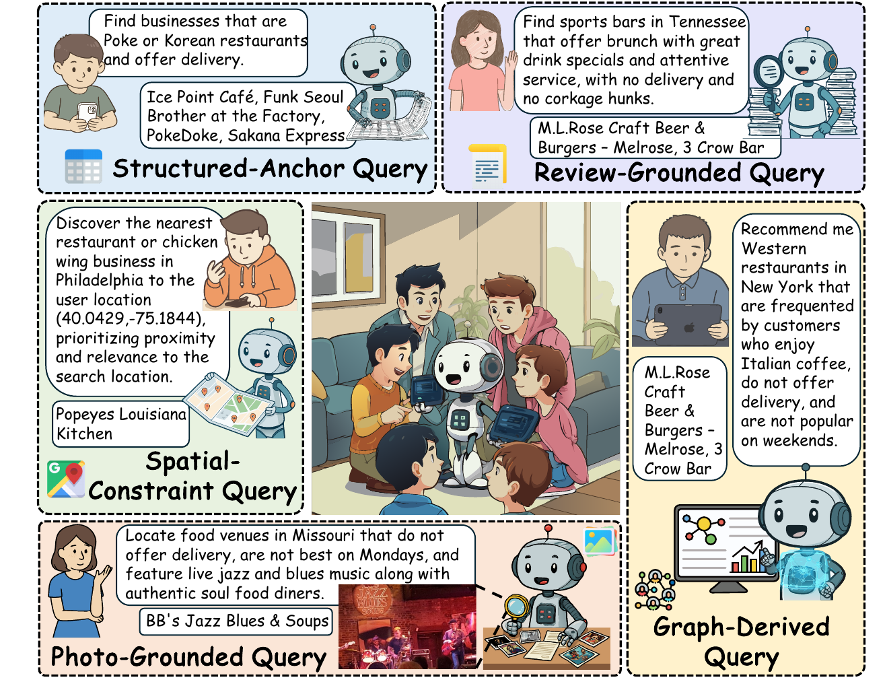
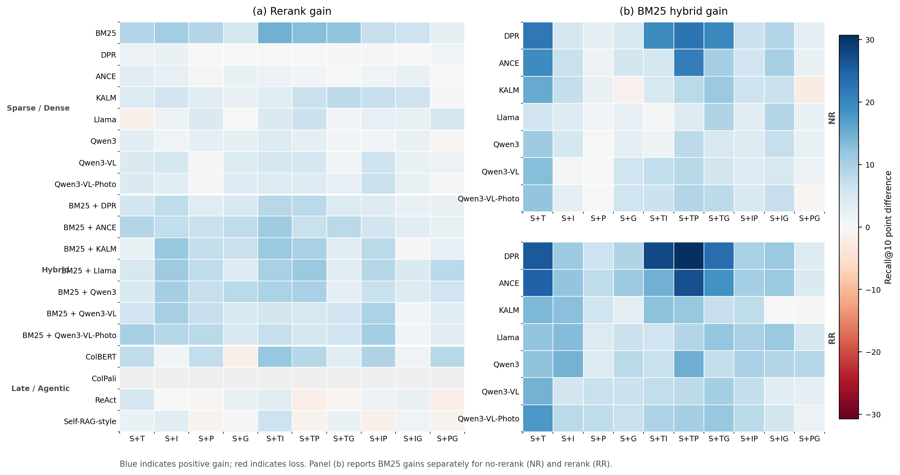

Introduction
HeterQA studies record-level retrieval for natural-language questions whose evidence is distributed across heterogeneous sources.
In many practical systems, target records are not described by a single table or document. A business record, for example, may require evidence from relational fields, review text, photos, spatial constraints, and graph-derived signals. A returned record is correct only when its full evidence bundle satisfies the question.
HeterQA instantiates this setting with Yelp business records. It asks retrieval methods to identify target records rather than isolated evidence snippets, making the benchmark useful for evaluating candidate acquisition, cross-source grounding, and final record-set selection.
Benchmark Overview
Each HeterQA question combines record-field constraints with one or two additional evidence families: review text, photos, spatial constraints, or graph-derived evidence.
| QA pairs | 857 |
|---|---|
| Evidence sources | 5: record fields, text, images, spatial constraints, and knowledge graphs |
| Source-composition subsets | 10 |
| Average query length | 22.2 words |
| Average verified answer set size | 2.3 records |
| Query diversity | Shannon Entropy 6.712, Type-Token Ratio 0.204 |
| Benchmark | Open record retrieval | Relational tables | Text documents | Image repositories | Spatial databases | Knowledge graphs | Missing field cues |
|---|---|---|---|---|---|---|---|
| HybridQA | No | Partial | Yes | No | No | Partial | No |
| OTT-QA | Yes | Partial | Yes | No | No | Partial | No |
| MMQA | Partial | Partial | Yes | Yes | No | Partial | No |
| Spider2.0 | No | Yes | Partial | No | No | Partial | No |
| BIRD | No | Yes | Partial | No | No | Partial | No |
| STARK | Yes | Partial | Yes | No | No | Yes | No |
| HeterQA | Yes | Yes | Yes | Yes | Yes | Yes | Yes |
Partial denotes a related component that is present but not evaluated as the full capability for certified target-record retrieval.
Construction Workflow
HeterQA uses an answer-driven construction protocol. It starts from executable record-field constraints, expands candidates through heterogeneous evidence sources, verifies source-specific constraints, and only then verbalizes retained cases into natural-language questions.
- Relational initialization and missing-value recovery. Seed records are selected through structured constraints and expanded through text, image, and graph evidence.
- Source-specific constraint instantiation. Review text, photos, spatial operators, and graph patterns provide additional constraints.
- Candidate filtering. Candidate records are checked against the selected evidence requirements across applicable sources.
- Question verbalization and contradiction detection. The generated question is checked against record bundles to remove contradictory cases.
- Quality certification. Manual review and answer-set certification finalize the released record labels.

Dataset Description
HeterQA covers ten source-composition subsets. The notation below uses S for record fields, T for review text, I for images, P for spatial constraints, and G for graph-derived evidence.
| Subset | Sources beyond record fields | Questions | Avg. length | Avg. verified answers |
|---|---|---|---|---|
| Q(S+T) | review text | 96 | 21.3 | 2.8 |
| Q(S+I) | photos | 66 | 12.8 | 2.7 |
| Q(S+P) | spatial constraints | 138 | 16.9 | 2.4 |
| Q(S+G) | graph-derived evidence | 46 | 20.7 | 3.1 |
| Q(S+T,I) | review text + photos | 74 | 22.9 | 2.6 |
| Q(S+T,P) | review text + spatial constraints | 107 | 28.5 | 1.5 |
| Q(S+T,G) | review text + graph-derived evidence | 72 | 32.3 | 2.9 |
| Q(S+I,P) | photos + spatial constraints | 133 | 18.5 | 2.2 |
| Q(S+I,G) | photos + graph-derived evidence | 44 | 24.1 | 1.4 |
| Q(S+P,G) | spatial constraints + graph-derived evidence | 81 | 27.4 | 1.5 |
| Overall | ten subsets | 857 | 22.2 | 2.3 |
Representative Questions
Questions ask for target records that jointly satisfy field constraints and non-field evidence. Matching a single review, photo, or nearby location is insufficient when the full record bundle violates another required condition.

Evaluation Results
The evaluation compares sparse retrieval, dense retrieval, hybrid retrieval, late-interaction retrieval, and agentic retrieval under the same record-level evaluation metrics.
| Best Recall@10 | 32.78, achieved by hybrid retrieval with Llama embedding and reranking |
|---|---|
| Best MRR@10 | 25.26, achieved by Self-RAG with reranking |
| BM25 Recall@10 | 27.21, showing that sparse retrieval remains a strong acquisition baseline |

Release Format
HeterQA publishes benchmark annotations, answer identifiers, qrels, schemas, and structured evidence summaries. It does not redistribute original Yelp reviews, photos, full business records, business addresses, user data, prompt traces, or local paths.
Users reconstruct retrieval corpora by separately obtaining the Yelp Open Dataset and
joining with HeterQA through stable identifiers such as business_id and
recoverable review_id values.
data/queries.jsonl | questions and subset labels |
|---|---|
data/answers.jsonl | certified answer sets |
data/qrels/test.tsv | BEIR-style relevance judgments |
data/evidence.jsonl | structured answer-level evidence summaries |
data/source_manifest.json | release provenance and scope |
schemas/*.schema.json | JSON Schemas for release tables |